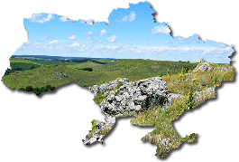

- Збереження біорізноманіття: Природа містить в собі величезне різноманіття видів рослин, тварин і мікроорганізмів, яке утримує екосистеми у рівновазі та забезпечує стійке функціонування екосистем.
- Забезпечення екосистемних послуг: Природа надає нам такі важливі екосистемні послуги, як очищення повітря та води, регулювання клімату, збереження ґрунтів та запобігання природним катастрофам.
- Забезпечення благополуччя людей: Збереження природних ресурсів і екосистем важливе для забезпечення харчової безпеки, доступу до чистої води і повітря, а також для здоров'я і благополуччя людей.
